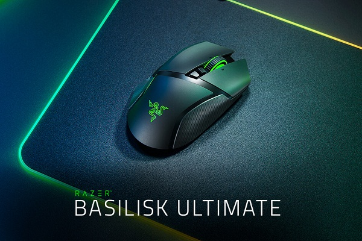
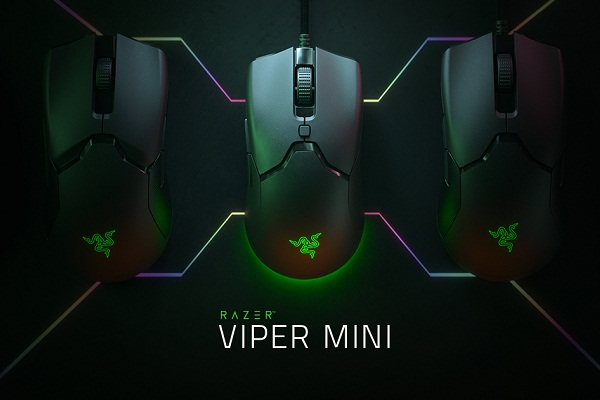
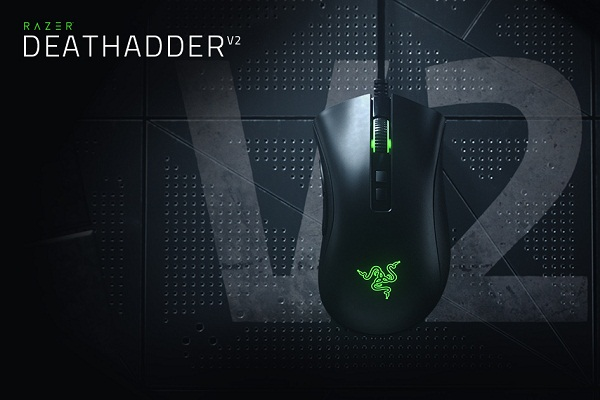

- Sensor óptico de 6400 ppp reales.
- Hasta 220 pulgadas por segundo (IPS)/30 G de aceleración.
- Switches mecánicos para ratón Razer™.
- Siete botones Hyperesponse programables de forma independiente.
- Rueda de desplazamiento táctil especial para juegos.
- Diseño ergonómico para diestros con agarres laterales de goma mejorados.
- Iluminación Razer Chroma™ con 16,8 millones de colores reales personalizables
- Tasa de sondeo (ultrapolling) de 1000 Hz
- Compatible con Razer Synapse 3
- Peso aproximado: 95 g/0,21 lb (sin cable)
Basilisk


- Hasta 300 pulgadas por segundo (IPS)/35 G de aceleración máxima.
- Razer Viper presenta un diseño ambidiestro optimizado para las manos más pequeñas.
- Switches ópticos para ratón Razer™ con una duración de hasta 50 millones de clicks.
- Base del ratón grande de Teflón 100 % (0,8 mm de grosor).
- Rueda de desplazamiento táctil especial para juegos.
- Ajustes inmediatos de sensibilidad (niveles predeterminados: 400/800/1600/3200/6400).
- Perfil de memoria integrada.
- Iluminación Razer Chroma™ RGB con 16,8 millones de colores reales personalizables.
- Seis botones Hyperesponse programables de forma independiente.
- Compatible con Razer Synapse 3.
- Cable Speedflex de 1,8 m/6 pies.
- Peso aproximado: 61 g / 0,13 lbs (sin cable).
Viper Mini
- Sensor óptico de 16.000 ppp reales.
- Hasta 450 IPS /50 g de aceleración.
- Switches mecánicos Razer para ratón.
- Diseño ergonómico para diestros con agarres laterales de goma texturizada.
- Rueda de desplazamiento táctil especial para juegos.
- 7 botones Hyperesponse programables de forma independiente.
- Iluminación Razer Chroma™ con 16,8 millones de opciones de color personalizables.
- Preparado para Razer Synapse.
- Ultrapolling de 1.000 Hz.
- Ajuste de sensibilidad instantáneo.
- Conector USB dorado.
- Cable de 2 m (siete pies) de longitud, ligero, de fibra trenzada.
- Peso aproximado: 105 g / 0,23 lb.
- Compatible con Xbox One para entrada básica.
Deathadder
